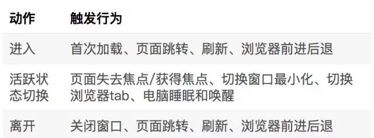
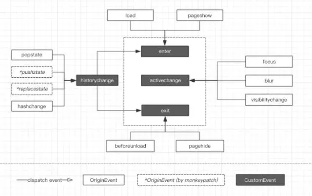

页面时长统计
页面生命周期
页面生命周期可以定义为 进入 -> 活跃状态切换 -> 离开。

事件监听
页面进入和离开
- 页面的首次加载、页面关闭、刷新等操作监听：
- 浏览器的前进后退监听：
- 单页应用的内部跳转：
- 监听路由变化 history mode：监听 window.onpopstate 事件处理前进后退的操作；重写history.pushState()和history.replaceState()方法，从而监听到这两个操作。 hash mode：监听 window.onhashchange 事件处理 hash 的变化。
- 通过 URL 判断 客户端定义 数据分析平台定义
猴子补丁（Monkeypatch），重写 history.pushState 和 history.replaceState 方法：
let _wr = function (type) { let orig = window.history[type] return function () { let rv = orig.apply(this, arguments) let e = new Event(type.toLowerCase()) e.arguments = arguments window.dispatchEvent(e) return rv } } window.history.pushState = _wr('pushState') window.history.replaceState = _wr('replaceState') window.addEventListener('pushstate', function (event) {}) window.addEventListener('replacestate', function (event) {})
页面活跃状态切换
- document visibilitychange 事件
- document.hidden 或 document.visibilityState 来读取当前页面状态
- window.onblur/window.onfocus 事件
- PC端还可以考虑监听鼠标行为，比如当一定时间内鼠标没有操作则认为用户处于非活跃状态
数据上报时机
- 页面离开时上报
- 页面刷新、关闭窗口等操作可能会造成数据丢失
- 页面再次访问时上报
- 会丢失历史访问记录中最后一个页面数据
实现
可以抽象为一个类，封装 enter exit active inactive 等操作，内部通过 state 属性来维护当前页面状态。
不同事件触发时，进行处理，派发相应的操作，最后进行数据上报。
